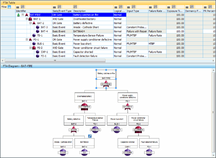
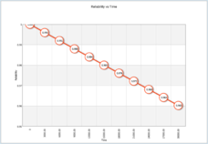

Windchill FTA
formerly Relex Fault Tree
In applications where reliability and safety are paramount, Windchill FTA provides the ability to focus on a top-level event, such as a safety issue or a critical failure, so you can mitigate its occurrence or impact. Intuitive graphical diagramming combined with powerful analytical tools allow you to easily define the critical failure, its contributing events, and their logical relationships to produce a powerful mathematical model of even the most complex systems. Windchill FTA also supports Event Tree construction to model the likelihood of downstream consequences.
 Powerful Calculations. Windchill FTA supports both quantitative and qualitative analyses, providing flexibility based on requirements. A number of calculated results are available, with user options for the calculation method employed. Windchill FTA incorporates a Minimal Cut Set (MCS) engine that quickly determines the minimal cut sets and supports interactive, on-screen cut set highlighting. Incorporate common cause failures using the Beta, MGL, Landed or BFR models and calculate Reliability Importance measures using Birnbaum, Criticality, or Fussell-Vesely methods.
 Increased Productivity. Easily import tree structures from, or export calculated results to, commonly used formats like Microsoft Excel, Microsoft Access, XML, and plain text files. Easily navigate even the largest trees with filter and search capabilities, using the standard graphical view or the compact tabular view. Auto-aligned graphical layout and automated pagination for reports eliminate painstaking formatting tasks. Create libraries to store common event parameters, or store entire branches of validated tree logic for use in other analyses.
Professional Outputs. Windchill Prediction is supplied with a range of industry standard reports and graphs. Easy-to-use Report and Graph Wizards provide complete user customization of outputs to fit your specific needs, without the need for IT experts. Once complete, reports and graphs can be printed or saved directly to Microsoft Word or Excel, and Adobe PDF.
Fault Tree Data Sheet
J2556_Windchill_FTA_DS.pdf
Adobe Acrobat document [199.9 KB]